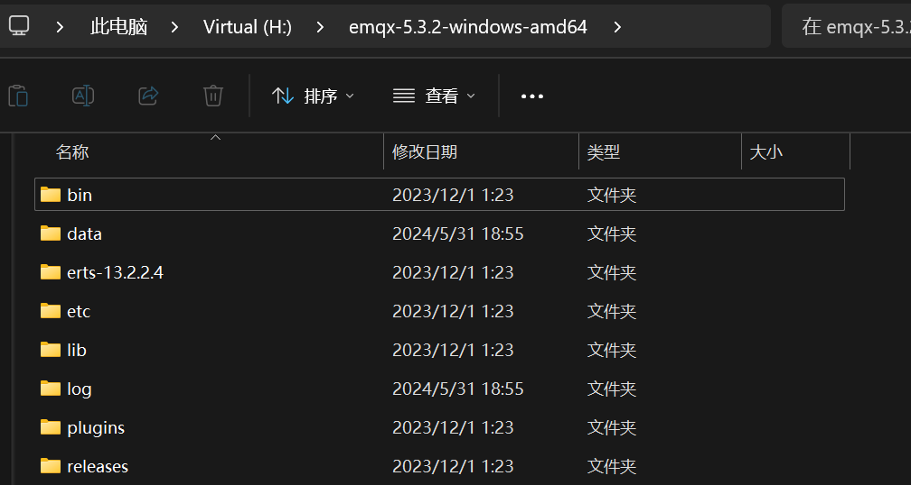
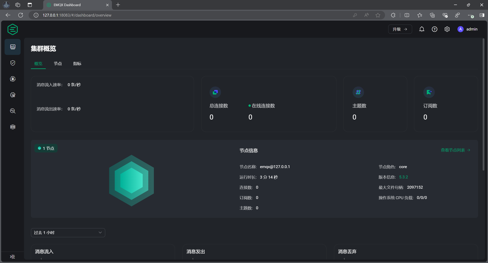
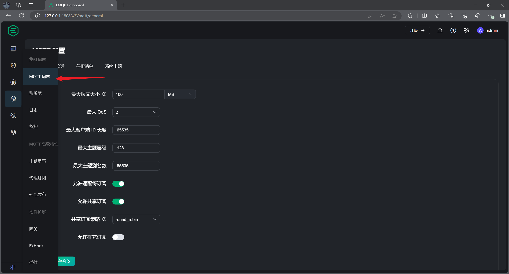
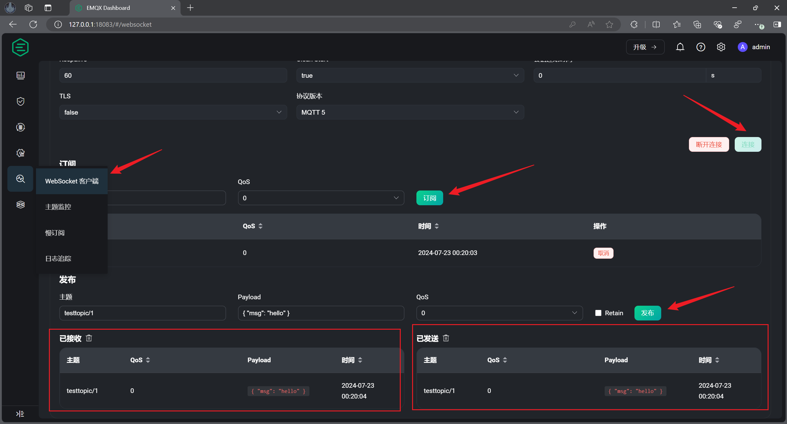
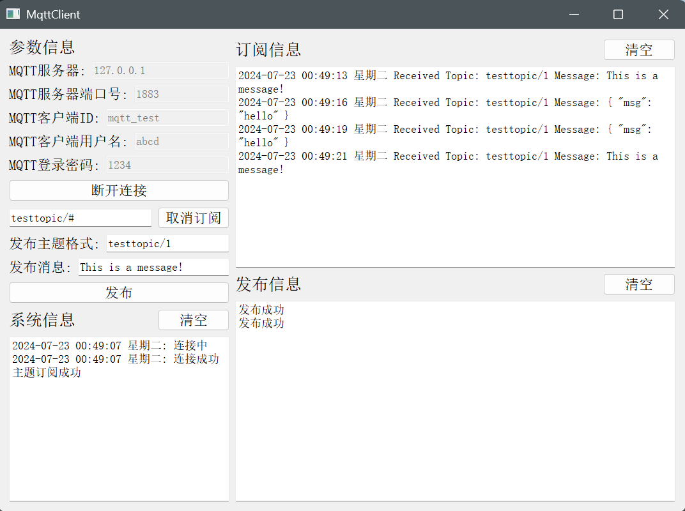
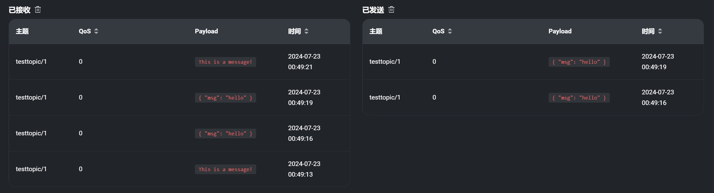
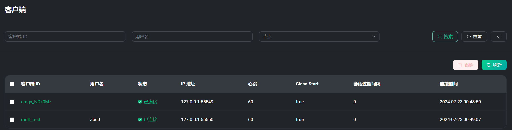
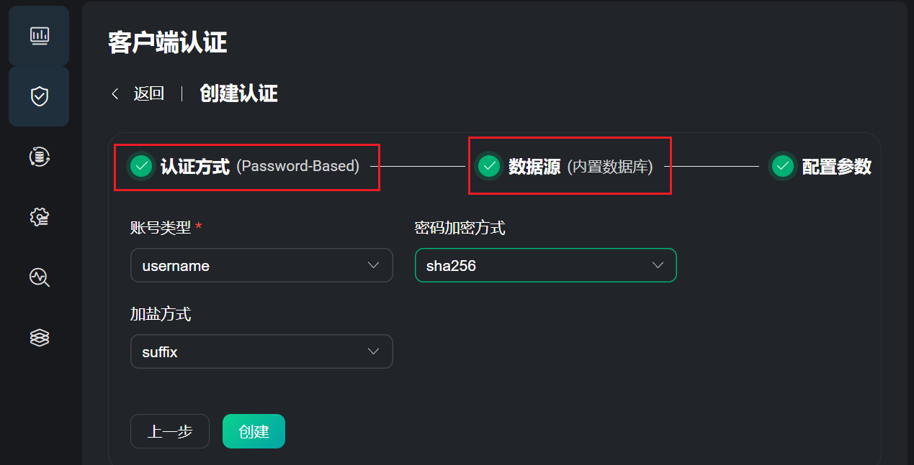
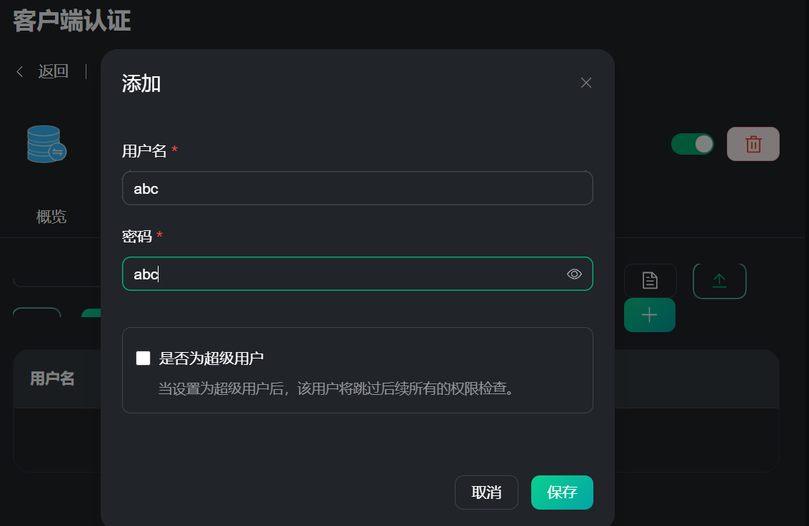
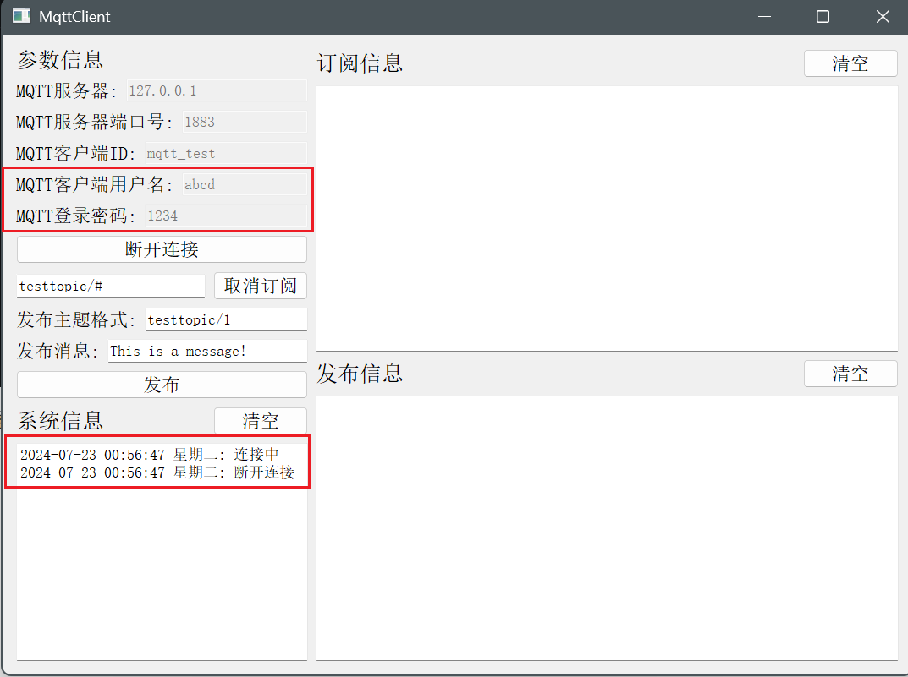

使用EMQX搭建MQTT服务器
使用EMQX搭建MQTT服务器
序言
早初是使用阿里云和 OneNET 平台作为 MQTT 服务器进行使用，但有些功能需要 money，所以就想着能不能自己搭建个简易的服务器来耍耍，查找资料找到 EMQX 很符合自己的需求。
EMQX 是一款大规模可弹性伸缩的云原生分布式物联网 MQTT 消息服务器。
作为全球最具扩展性的 MQTT 消息服务器，EMQX 提供了高效可靠海量物联网设备连接，能够高性能实时移动与处理消息和事件流数据，帮助您快速构建关键业务的物联网平台与应用。
EMQX 分为两个版本：开源版和商业版，这里作为学习使用，使用开源版即可，文档如下：
Windows安装EMQX
EMQX 支持多平台安装，这里我使用 Windows 来安装，下载地址：
目前一些较新的版本好像没有 Windows 版本的。
解压得到：

当前目录下打开 Windows PowerShell 命令行窗口，输入命令
1 | .\bin\emqx start |
启动的时候会弹出防火墙提示窗口，点击允许访问。成功会提示如下信息：
1 | EMQX_NODE__DB_ROLE [node.role]: core |
常用命令：
1 | .\bin\emqx start 启动 |
更多命令：
配置EMQX服务器
登录管理控制台
启动后，浏览器输入 127.0.0.1:18083 就可以访问 EMQX 的后台管理界面。
默认用户名：admin，密码：public，第一次登录会提示修改密码，可以选择跳过。

MQTT 配置
可以自定义设置 MQTT 的参数（http://127.0.0.1:18083/#/mqtt/general）：

测试 MQTT 通信
测试 MQTT 通信：打开 WebSocket 客户端（http://127.0.0.1:18083/#/websocket），点击连接——订阅——发布，显示接收消息表示通信正常。

主题发布和主题订阅的格式可以自定义。
QT-mqtt 客户端测试
可以看到自己的客户端能够接收订阅主题发布的消息和发布消息到对应主题。


http://127.0.0.1:18083/#/clients 可以查看连接的设备：

设置客户端认证
EMQX 默认配置中启用了匿名认证，任何客户端都能接入 EMQX，这里可以设置客户端认证（http://127.0.0.1:18083/#/authentication），设置认证方式为 Password-Based，数据源为内置数据库。

创建完成后添加用户

再次使用客户端测试：

没有使用创建好的用户进行连接，连接失败，修改添加的用户信息再次连接：

总结
EMQX 还有很多功能，例如：
- 设置每个客户端的权限，限制它是否可以发布主题和订阅主题；
- 数据转发，将数据妆发到自己的 HTTP 服务器或者其他的 MQTT 服务器。
我目前暂时只需要用到文中介绍的功能，做个记录。